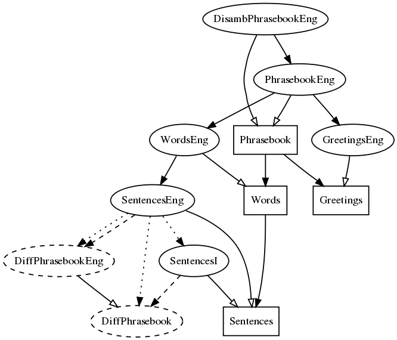

History
This phrasebook is a program for translating touristic phrases between the 15 European languages included in the MOLTO project (Multilingual On-Line Translation):
It is implemented by using the GF programming language (Grammatical Framework). It is the first demo for the MOLTO project, released in the third month (by June 2010) but to be updated in the course of the project.
The phrasebook has the following requirements:
The phrasebook is available as open-source software, licensed under GNU LGPL.
The source code resides in
code.haskell.org/gf/examples/phrasebook/
Current status (8 April 2010):
http://tournesol.cs.chalmers.se/~aarne/phrasebook/phrasebook.html
Interlingua-based translation.
Incremental parsing.
The use of resource grammars and functors.
Compile-time transfer: especially, in Action in Words.
Quasi-incremental translation: many basic types are also used as phrases.
Disambiguation, esp. of politeness distinctions.
The abstract syntax defines the ontology behind the phrasebook.
Some explanations can be found in the
ontology document, which is produced from the
abstract syntax files
Sentences.gf
and
Words.gf
by make doc.
Sentences: general syntactic structures implementable in a uniform way.
Concrete syntax via the functor SencencesI.
Words: words and predicates, typically language-dependent.
Separate concrete syntaxes.
Greetings: idiomatic phrases, string-based.
Separate concrete syntaxes.
Phrasebook: the top module putting everything together.
Separate concrete syntaxes.
DisambPhrasebook: disambiguation grammars generating feedback phrases if
the input language is ambiguous.
Here is the module structure as produced in GF by
> i -retain DisambPhrasebookEng.gf
> dg -only=Phrasebook*,Sentences*,Words*,Greetings*,DisambPhrasebookEng
> ! dot -Tpng _gfdepgraph.dot >pgraph.png

Improved translation interface
Complete the missing words and phrases
Disambiguation grammars for other languages than English
Extend the abstract lexicon in Words by hand or (semi)automatically for
Link to Google translate, for fall-back and for comparison
Feedback facility in the UI
Customizable distribution: make your own selection of the 2^15 language subsets when downloading the phrasebook to a phone
The basic things "everyone" can do is
Words and greetings in Greetings
The missing concrete syntax entries are added to the WordsL.gf
files for each language L. The
morphological paradigms
of the GF resource library should be used. Actions (prefixed with A, as AWant) are
a little more demanding, since they also require syntax constructors. Greetings (prefixed
with G) are pure strings.
Here are the steps to follow for contributors:
darcs pull.
make present in gf/lib/src/.
gf/examples/phrasebook/.
make pgf.
darcs record . (in the phrasebook subdirectory).
darcs send -o my_phrasebook_patch, which you can
send to GF maintainers.
gf/src/server/ and follow the instructions in the
project Wiki.
Phrasebook.pgf is available to you GF server (see project wiki).
lighttpd (see project wiki).
gf/examples/phrasebook/www/phrasebook.html and use your phrasebook!